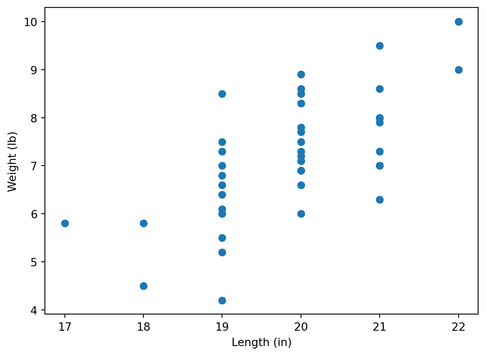
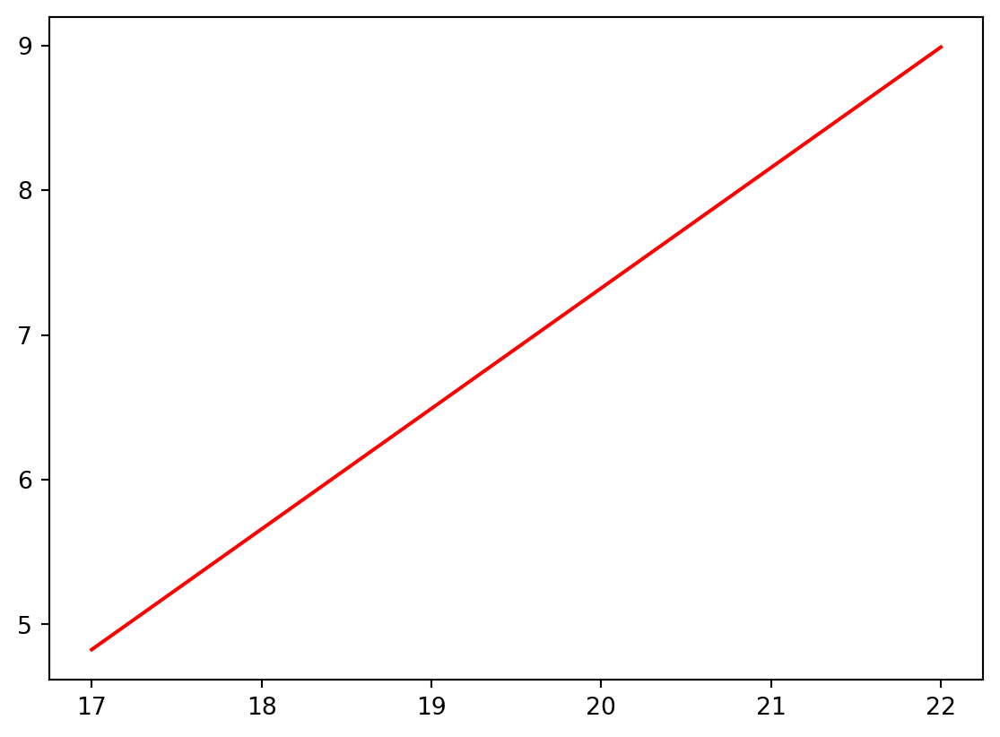
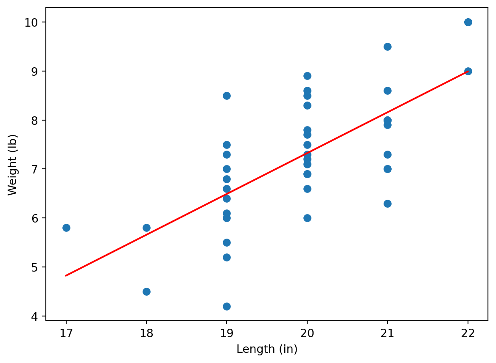

Recall that the linear regression provides the “best line” that reflects the relation between two sets of data. Namely, let \(X=(x_1,\ldots,x_n)\) and \(Y=(y_1,\ldots,y_n)\) be vectors (arrays) of data. We define
The strength of a linear relationship between the variables can be measured by the Pearson correlation coefficient (or just the correlation coefficient) which is given by
Download file Birthweight.csv from Canvas (see Week 4 section in Modules) and upload it to Anaconda.com/app. Assign it to the dataframe named df. Show the first rows of df.
Hint: to import CSV file, use commands discussed in Lab 3. Don’t forget about pandas library.
You should get the following output
Code
import pandas as pddf = pd.read_csv("Birthweight.csv")df.head()
id
headcircumference
length
Birthweight
Gestation
smoker
motherage
mnocig
mheight
mppwt
fage
fedyrs
fnocig
fheight
lowbwt
mage35
LowBirthWeight
QCL_1
0
1313
12
17
5.8
33
0
24
0
58
99
26
16
0
66
1
0
Low
1
1
431
12
19
4.2
33
1
20
7
63
109
20
10
35
71
1
0
Low
1
2
808
13
19
6.4
34
0
26
0
65
140
25
12
25
69
0
0
Normal
2
3
300
12
18
4.5
35
1
41
7
65
125
37
14
25
68
1
1
Low
1
4
516
13
18
5.8
35
1
20
35
67
125
23
12
50
73
1
0
Low
2
As you can see, this dataframe contains the data about newborns and their parents. (Here values of headcircumference and length are in inches and Birthweight is in pounds.)
We will study dependence of newborn’s weights on their lengths.
1.2
Plot a scatter plot making length data on the horizontal axes and Birthweight data on the vertical axes. Label axes appropriately, and show in labels the units (in and lb).
Hint: use commands discussed in Lab 3. Don’t forget about matplotlib.pyplot module. Note also that matplotlib allows to use Pandas series (e.g. dataframe columns), it’s not necessary to convert them into Numpy arrays using .to_numpy() command.
Code
import matplotlib.pyplot as pltplt.scatter(df['length'], df['Birthweight'])plt.xlabel('Length (in)')plt.ylabel('Weight (lb)')plt.show()

Manual calculation
At first, we calculate the regression line manually, using the formulas above.
1.3
Convert columns length and Birthweight to Numpy arrays x and y, respectively. Assign \(\bar{x}\) and \(\bar{y}\) to mx and my, respectively. Note that you may use either mean or np.mean functions.
Assign values of \(S_{xx}, S_{xy}, S_{yy}\) to variables sxx, sxy, and syy, respectively (use the formulas at the beginning of this Lab). Note that you can use functions sum or np.sum, and remember about vector operations in Python.
Assign values of \(\hat{\beta}_1\) and \(\hat{\beta}_0\) to variables b1 and b0, respectively. Assign the Pearson regression coefficient to variable r. (To find the square root, you may use np.sqrt function.)
You may notice that it gives the same answers (up to a little calculation error), where slope stands for b1 (that is indeed the slope of \(\hat{y}=\hat{\beta}_0+\hat{\beta}_1 x\)), intercept stands for b0, and rvalue stands for r. You may access these values as follows:
lr = linregress(x,y)[lr.intercept, lr.slope, lr.rvalue]
that is pretty simular to [b0, b1, r] calculated before.
We are going now to draw now the graph of the regression line on the scatter plot. For this, we create an array of values on the horizontal axes by dividing the interval between min(x) and max(x) by e.g. \(100\) parts (for this we will use np.linespace function), and calculate the values of the linear regression line at these points:
import matplotlib.pyplot as pltxvalues = np.linspace(min(x), max(x), 100)yvalues = lr.intercept + lr.slope * xvaluesplt.plot(xvalues, yvalues, color ='r')plt.show()

1.6
Combine the regression line with the scatter plot to get the following output:
Code
import matplotlib.pyplot as pltplt.scatter(x, y)xvalues = np.linspace(min(x), max(x), 100)yvalues = lr.intercept + lr.slope * xvaluesplt.plot(xvalues, yvalues, color ='r')plt.xlabel('Length (in)')plt.ylabel('Weight (lb)')plt.show()

As we can see, the regression line reflects the trend between weights and lengths, however, the values are “jumping” around the line. We could see that the correlation coefficient (see lr.rvalue or r) is not large:
lr.rvalue
0.697008279202201
i.e. we see here a moderate correlation.
1.7
Download now file Experience-Salary.csv which contains data on how the salary depends on experience. Repeat the previous steps to show the scatter plot together with the regression line:
You can see that here the regression line fits the data better. Indeed, in this case the correlation is higher:
lr.rvalue #If you kept the notation lr for linregress object.
0.8109692945840655
2 (Binary) Logistic Regression
In contrast to the linear regression, the binary logistic regression can be applied if the dependent variable takes only two values, e.g. \(0\) and \(1\). For example, download file colleges.csv from Week 4 of Canvas Modules, and upload it to Anaconda.com/app.
Investigating data
df = pd.read_csv("colleges.csv")df.tail()
gmat
gpa
work_experience
admitted
25
650
3.7
6
1
26
670
3.3
6
1
27
690
3.7
5
1
28
690
3.7
5
1
29
620
2.7
5
0
This dataset describes how much the marks in gmat and gpa exams (read Wikipedia for details about these exams, it’s not relevant now though) and work_experience affect whether a student was admitted to a US college.
Note that we used here tail function, it shows the last rows of a dataframe. Note that the last index is 29 i.e. the dataframe contains 30 rows (the indexes start with 0 as usual). Another way to get the dimensions of the dataframe is
df.shape
(30, 4)
i.e. there are 30 rows and 4 columns.
As you can see, the admitted column contains only \(0\) and \(1\), where \(1\) stands for admission, and \(0\) for failure; more precisely, we can see this for the last rows only, but we can check this using the following Python trick:
set(df['admitted'])
{0, 1}
Here set function returns the set of all values of the column (unique values as it is a set). An alternative Pandas code for this is
df['admitted'].unique()
array([0, 1], dtype=int64)
Separating data
Now we save the last row in a separate dataframe, call it df_test, and redefine df as the first 29 rows of the original df (you learned the functions below in Python lectures of MA-M06).
(here there is only one independent variable, gmat, hence, we use only \(x_1\)), and the values of coef in the summary for Intercept is \(\hat{\beta}_0\), whereas the value of gmat in the summary is \(\hat{\beta}_1\). We can access these values directly:
[reg.params.iloc[0], reg.params.iloc[1]]
[-17.67642930546272, 0.027183426815336253]
Now, we are going to demonstrate the obtained result graphically. We know that (see Lecture Notes)
\[
p = \frac{e^{\hat{\beta}_0+\hat{\beta}_1 x_1}}{1+e^{\hat{\beta}_0+\hat{\beta}_1 x_1}}
\]
We are going now to plot the scatter plot of admitted vs gmat and plot on the same diagram the curve \(p=p(x_1)\). We will use np.exp function for the exponent.
We can see that the red function separates values of \(0\) and \(1\).
This function can be used to make predictions about the admission. Namely, we take the value of gmat for the last student of the original dataframe, now stored in the separate dataframe df_test; and then we calculate \(p\) at this \(x_1=\)gmat:
The received value is more close to \(0\) then to \(1\), hence, we may expect that the student would not be admitted; that was the case. Though the value is still relatively large, hence, probably, one mark is not enough to make a good prediction.
Logistic regression for 2 independent variables
However, we expect that the admission depends on both marks, in gmat and in gpa. To take both marks into account one needs to change admitted ~ gmat by admitted ~ gmat + gpa in the previous code.
2.1
Change the code as explained and get the following summary.
Code
reg = smf.logit('admitted ~ gmat + gpa', data = df).fit()reg.summary()
Optimization terminated successfully.
Current function value: 0.322141
Iterations 8
Logit Regression Results
Dep. Variable:
admitted
No. Observations:
29
Model:
Logit
Df Residuals:
26
Method:
MLE
Df Model:
2
Date:
Thu, 30 Oct 2025
Pseudo R-squ.:
0.5348
Time:
00:41:51
Log-Likelihood:
-9.3421
converged:
True
LL-Null:
-20.084
Covariance Type:
nonrobust
LLR p-value:
2.162e-05
coef
std err
z
P>|z|
[0.025
0.975]
Intercept
-22.0171
9.232
-2.385
0.017
-40.111
-3.923
gmat
0.0150
0.014
1.052
0.293
-0.013
0.043
gpa
3.7604
2.003
1.877
0.060
-0.166
7.686
Again, the coefficients are available using (in the previous notations) reg.params. As before, Intercept stands for \(\hat{\beta}_0\), gmat stands for \(\hat{\beta}_1\), and also gpa stands for \(\hat{\beta}_2\) in
\[
p = \frac{e^{\hat{\beta}_0+\hat{\beta}_1 x_1+\hat{\beta}_2 x_2}}{1+e^{\hat{\beta}_0+\hat{\beta}_1 x_1+\hat{\beta}_2 x_2}}
\]
We can show how \(p\) separates the values (some lines of the code may be new for you - it’s just for your information, you are not required to learn them):
As you can see, the red graph (surface) of \(p\) separates values of \(0\) and \(1\). Again, we may try to predict the admission for the student with data stored in df_test. We assigned to gmat the corresponding mark, now we do the same for gpa and calculate p for these two values. As you can see, the result is much closer to \(0\), hence, we are more confident in our (correct) prediction that the student would not be admitted.
Now, we consider the dependence of admitted on all three values: gmat, gpa, and work_experience. Surely, in this case, we will not be able to draw \(p\) (as it would be a 4-dimensional diagram), but we can calculate \(\hat{\beta}_0,\hat{\beta}_1,\hat{\beta}_2,\hat{\beta}_3\).
As you can see, the information about a relatively high work experience (5 years in this case), increased chances to be admitted, though the non-admission is still more likely.
Note that the rest of information from summary actually explains the level of certainty we may have in the future prediction (we do not consider this now). Note also that, in practice, one predicts outcomes for a number of students (the dataframe df_test would contain a lot of rows), and the prediction is “good” if one predicted correctly for a big percentage of them.